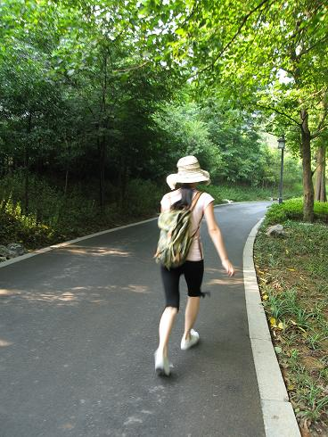
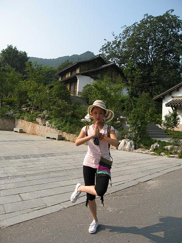
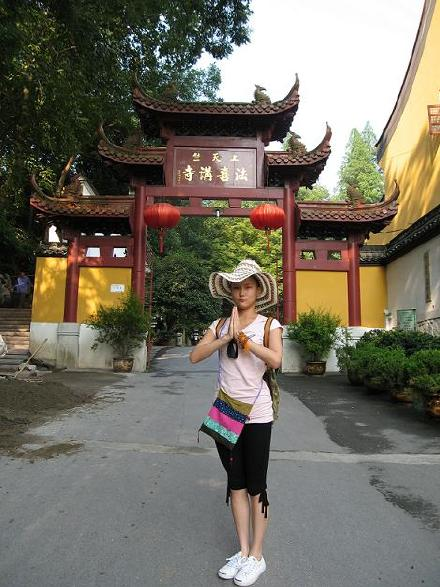

大家还不知道吧!其实我是居士...年初的时候与一位师傅结缘...举行了归依仪式..
黄居士当然要经常烧香拜佛拉...一直多想到杭州的上天竺...那天终于去了...

虽然那天很早...可以只要是去庙里烧香...我都会精神很好...
好开心...好久没看菩萨了...
希望大家都多多行善..少吃荤菜多是蔬菜...多多积德....菩萨一定会保佑我们的...

终于到拉...

下山打不到车,只能跑到车站做班车..